地政学
ハルビンは中国東北の奥にありながら、ロシア極東、内モンゴル、吉林、黒竜江の農業地帯を結ぶ交通の結節点です。松花江と鉄道が軍事、物流、移民、国境貿易を支え、北方から中国を読む入口になります。現在も要衝です。

🇨🇳 中国 / 黒竜江省 / World City Atlas
松花江沿いに広がる中国東北の大都市です。ロシア建築、東清鉄道、満洲史、重工業、氷雪祭、寒冷地の暮らし、食文化、都市更新が重なる北方の都市です。
都市の骨格
ハルビンは松花江の南北に市街を広げ、東北アジアの交通、穀物、工業、冬季観光を束ねてきました。中央大街の石畳と新しい新区、鉄道駅、凍る河畔が一つの都市体験になります。
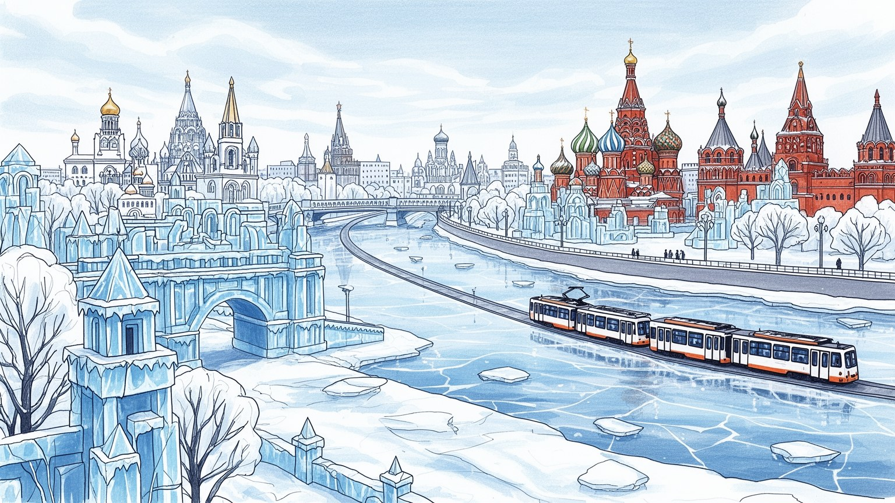
ハルビンは中国東北の奥にありながら、ロシア極東、内モンゴル、吉林、黒竜江の農業地帯を結ぶ交通の結節点です。松花江と鉄道が軍事、物流、移民、国境貿易を支え、北方から中国を読む入口になります。現在も要衝です。
食品加工、装備製造、鉄道関連、医薬、寒冷地技術、観光が雇用を作ります。国有企業の記憶と民間サービスが重なり、工場、駅、ホテル、清掃、配送、氷雪祭の季節労働が都市を動かしています。冬場も忙しいです。
中央大街、聖ソフィア大聖堂、ユダヤ人街の記憶、正教会建築、満洲史、東北の食卓が文化を厚くします。信仰は観光背景ではなく、移民、商業、戦争、家族の記憶を街に残す手がかりです。層は深いです。今も響きます。
観光客は氷雪祭、凍った松花江、中央大街、太陽島を訪れます。住民には暖房費、雪道、通勤、老朽住宅、雇用、人口流出、冬の健康が日々負担になります。美しい寒さの背後に生活の工夫があります。買物も寒さに沿います。
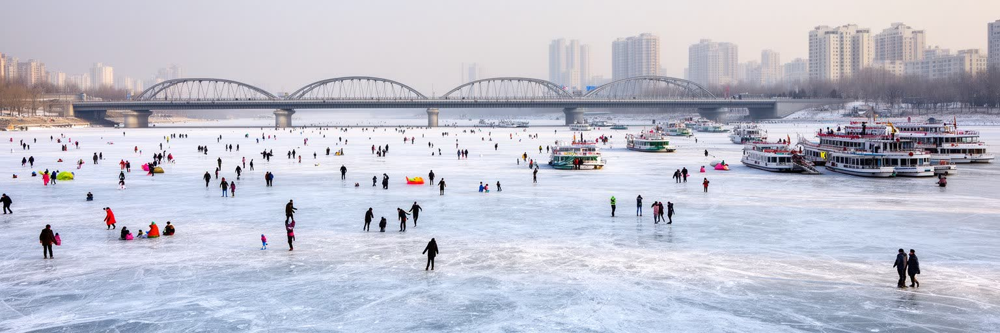
ハルビンの都市感覚は、松花江を抜きに考えられません。河は黒竜江省の農地、湿地、森林、工業地帯をつなぎ、市街の北と南を分けながら、橋、堤防、公園、港湾、冬の氷上遊びを生みます。夏には河畔の散歩道、遊覧、緑地が都市の余白になり、冬には厚い氷が歩行、そり、雪像、祭りの舞台へ変わります。この季節ごとの変化は景観だけでなく、交通、観光、治水、住宅地の価値、公共投資を左右します。松北新区の開発は河を越えた都市拡張を示し、古い中心部とは違う広い道路、展示施設、住宅地を作りました。一方で河川敷や低地では洪水、氷解期の安全、排水、水質管理も重要です。ハルビンを読むには、凍った河の美しさだけでなく、橋を渡る通勤、河畔の高層化、冬の観光設備、春の泥濘、夏の増水を一つの都市地形として見る必要があります。大河は都市の縁ではなく、中心を広げる軸です。河を挟む移動は通勤時間や住宅選びにも影響し、橋の混雑やバス路線は生活の実感になります。河畔の公共空間が豊かであるほど、市民は夏も冬も街を使い直せますが、商業化が強まりすぎると日常の散歩や釣り、子どもの遊び場は狭くなります。水辺を誰のために開くかが、都市の成熟を示します。堤防の上を歩く人、氷上で遊ぶ家族、対岸へ通う学生を同じ地図に置くと、松花江は景色ではなく生活の主役になります。
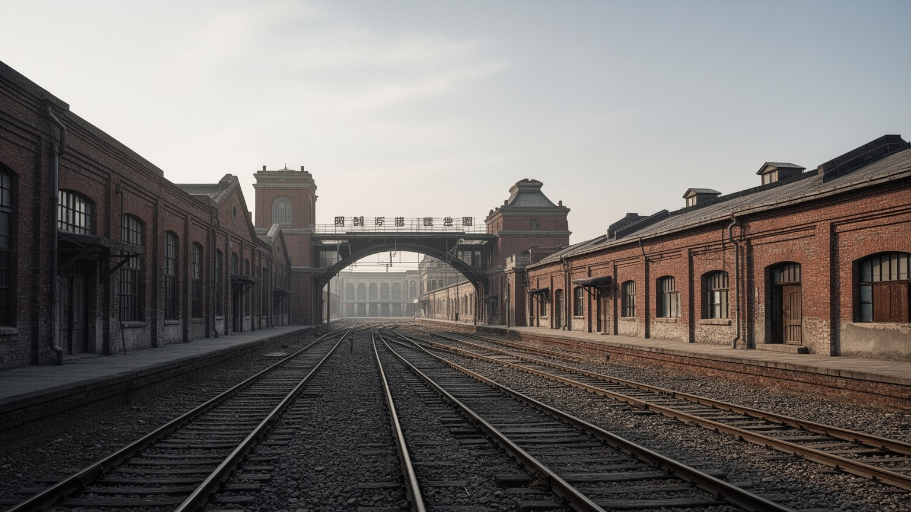
ハルビンは自然発生的な古都というより、鉄道と移民が急速に形作った近代都市です。東清鉄道の建設は、ロシア帝国、清朝、商人、技術者、労働者、軍事的な関心を松花江沿いに集め、駅、倉庫、ホテル、教会、銀行、住宅地を生みました。鉄道は穀物、木材、石炭、人の移動を束ね、国境を越える交易と政治的緊張も運び込みました。駅周辺の都市構造には、線路で分かれる地区、貨物の動線、官庁、商業街の配置が残ります。現在の高速鉄道や長距離列車も、黒竜江、吉林、北京、ロシア方面への距離感を変えています。鉄道都市としての記憶は郷愁だけではありません。国有企業の雇用、機械修理、物流、駅前商売、出稼ぎや帰省の流れが、現在の暮らしにも影響します。ハルビンを見る時、中央大街の観光だけに目を向けると、線路と駅が作った都市の実務的な骨格を見落とします。鉄道はこの街に外部への窓を与え、同時に外部の権力が入り込む通路にもなりました。駅前の再整備は都市の顔を変えますが、荷物を持つ帰省客、周辺県から来る患者や学生、深夜の保守作業員にとって駅は生活の入口です。鉄道の利便は観光と投資を呼び込む一方、人口が外へ流れる道にもなります。その両義性が鉄道都市ハルビンの現在です。線路沿いの倉庫や住宅を追うと、近代化の華やかさよりも、運び、待ち、修理する人の時間が見えてきます。
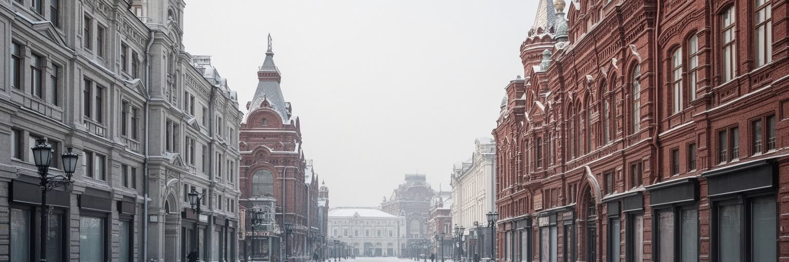
中央大街の石畳、聖ソフィア大聖堂、旧銀行、商館、木造住宅、丸屋根や装飾的なファサードは、ハルビンを中国の他都市とは違う姿に見せます。ロシア建築は観光資源として人気ですが、その背後には鉄道建設、帝国の進出、移民、商人、亡命者、ユダヤ人共同体、日本の占領、戦後の再編という複雑な歴史があります。建築を異国情緒としてだけ消費すると、そこに住み、働き、追われ、記憶を残した人々の時間は見えません。保存された建物はカフェや博物館、商業施設へ転用され、街の魅力を高める一方、老朽化、維持費、商業化、住民の転出も招きます。歴史地区の価値は外観の美しさだけでなく、どの記憶を説明し、どの生活を残すかで決まります。ハルビンの多文化性は、建物の様式の混合ではなく、国境、宗教、言語、商業、戦争の経験が同じ街区に刻まれたことにあります。観光客の散歩道と住民の買い物道が重なる時、歴史は写真の背景ではなく、現在の都市運営の課題として現れます。冬の雪をまとった聖堂や石畳は美しい一方、滑りやすい道、寒い店舗、古い建物の断熱と防火は管理の現実です。文化遺産は飾って終わるものではなく、使い続ける費用と説明責任を必要とします。そこに暮らす人の声が残るほど、建築は都市の記憶として生きます。街角の小さな修理や看板も、歴史地区の呼吸です。
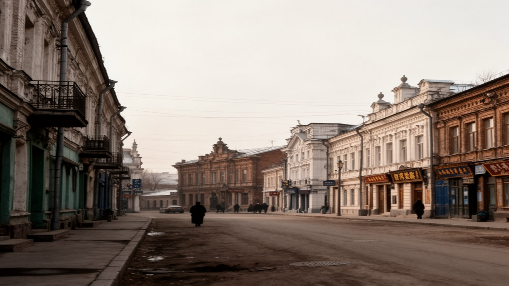
ハルビンの近代史は、満洲をめぐる国家、帝国、軍事、移民の交差点として重い意味を持ちます。清末からロシアの鉄道権益が入り、日本の影響、満洲国の時代、戦争、解放、社会主義工業化へと、街は何度も政治の枠組みを変えられました。周辺には侵略戦争や生物兵器研究の記憶もあり、明るい観光イメージだけで語ることはできません。満洲史は遠い歴史ではなく、地名、建物、鉄道、墓地、博物館、学校教育、家族の移動に残っています。多くの人が開拓、避難、帰還、動員、工場勤務、国有企業の生活を経験し、その記憶は世代ごとに違う形で伝わります。都市が観光化されるほど、暗い歴史をどう説明するかが問われます。記憶を単純な愛国物語に閉じれば、個人の痛みや多民族の経験は薄れます。逆に歴史を避ければ、建物や街路は意味を失います。ハルビンを読むには、氷雪祭の華やかさと同時に、満洲の近代化が暴力、移民、産業、国家建設を伴っていたことを見なければなりません。その緊張を抱えるからこそ、北方都市としての厚みがあります。博物館や記念施設だけでなく、古い工場住宅、学校名、鉄道沿いの集落にも歴史は残ります。過去を学ぶことは、誰が移動を強いられ、誰が都市を支え、誰の記憶が語られにくいかを考えることです。観光と教育がその複雑さを避けずに扱えるかが、この都市の歴史意識を決めます。
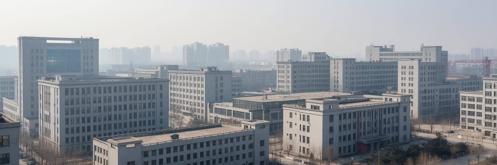
ハルビンの産業は、東北の計画経済と国有企業の歴史を強く受けています。発電設備、機械、鉄道関連、航空、医薬、食品加工、ビール、乳製品、農産物の流通は、周辺の穀倉地帯と都市の技術基盤を結びます。かつての重工業は安定した雇用、住宅、学校、病院、工場コミュニティを作りましたが、市場化と産業転換は多くの家庭に再就職、退職、賃金停滞の負担を残しました。現在のハルビンは観光やサービス業の印象も強い一方、冬季のイベント設営、ホテル、飲食、清掃、配送、警備、除雪など、季節に左右される仕事も増えています。工業都市としての力を保つには、古い設備を更新し、若い技術者を残し、ハルビン工業大学などの大学や研究機関と企業を結び直す必要があります。人口流出が続けば、工場だけでなく商店街、学校、医療にも影響します。ハルビンの労働を読むことは、巨大な工場の記憶と、観光都市を支える短期・現場の仕事を同じ視野に置くことです。寒さの中で働く身体、暖房を維持する技術、農産物を加工する工場の時間が、都市の経済を支えています。若い世代が残るには、賃金だけでなく、技能を伸ばせる職場、冬でも通いやすい交通、家族を支える教育と医療が必要です。工業の再生は工場の近代化だけでなく、働く人がこの都市に未来を見られるかにかかっています。雇用の安定は生活の安心そのものです。
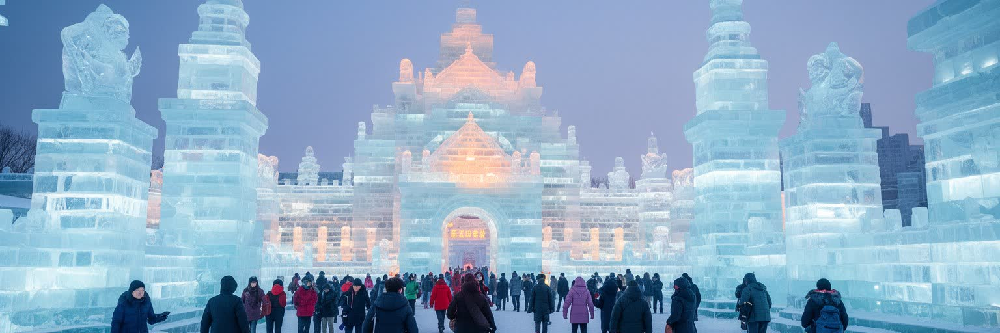
ハルビン氷雪祭は、都市の寒さを世界的な観光資源へ変えた代表的な例です。松花江の氷、夜の照明、巨大な氷の建築、雪像、スケート、凍った河の遊びは、訪問者に強い印象を残します。市民にとっては河畔の滑走、学校の冬季活動、アイスホッケー観戦、そり遊びも身近な冬の娯楽です。しかし祭りは自然の寒さだけで成り立つものではありません。氷の採取、運搬、彫刻、照明、電力、安全管理、交通整理、ホテル、飲食、清掃、医療、チケット管理、宣伝が一体となって初めて運営されます。観光収入は都市の知名度と雇用を高めますが、短い繁忙期への依存、価格上昇、混雑、寒さによる事故、地域住民の移動負担も生みます。気候変動で冬の安定性が揺らげば、氷雪観光の将来も再考が必要になります。ハルビンの冬を読むには、幻想的な夜景だけでなく、厳寒の中で働く人、除雪する人、暖房を守る人、観光客を支える公共交通を見ることが大切です。寒さはロマンではなく、生活の条件であり、技術と労働によって初めて楽しみに変わります。会場の外でも、タクシー、地下鉄、宿泊施設、病院、コンビニ、清掃員が観光の安全を支えます。冬の都市ブランドを長く保つには、利益が一部の施設に偏らず、地域商店や働く人の生活へ戻る仕組みが必要です。寒さを誇るほど、危険を減らす制度も問われます。
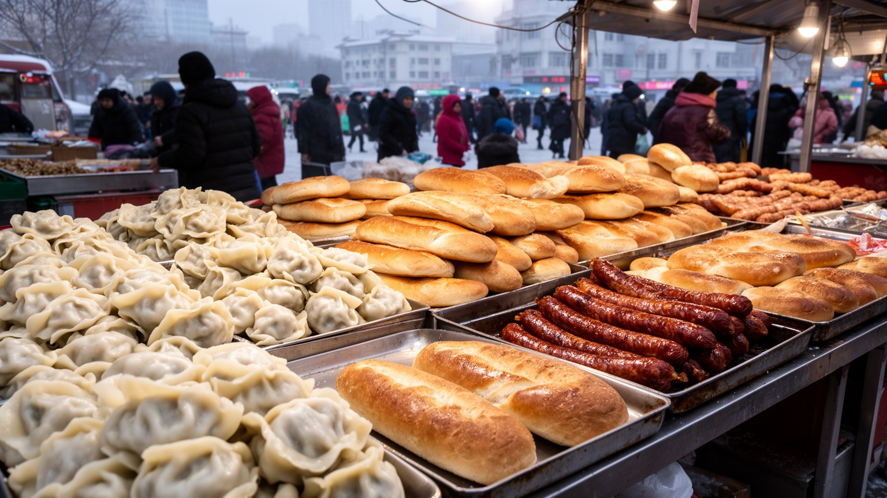
ハルビンの食文化は、寒冷地の保存食、東北農業、ロシア系の影響、移民の記憶が混ざってできています。紅腸、列巴、酸菜、鍋料理、餃子、じゃがいも、とうもろこし、乳製品、ビール、濃い味の煮込み料理は、長い冬を越すための食卓と深く関わります。観光客には中央大街の菓子店やレストランが目立ちますが、実際の食文化は市場、団地の食堂、家庭の漬物、冬の買いだめ、学生街の安い店にあります。朝市では凍った野菜、魚、ナッツ、焼き菓子の匂いが混ざり、屋台と小売店の声が寒い通りに響きます。食の背後には、黒竜江の穀物、畜産、乳業、冷蔵物流、食品工場、季節労働があり、都市と農村の関係が見えます。寒い気候では温かい料理、油分、発酵、保存が生活の知恵になりますが、健康、価格、食品安全、外食産業の労働条件も負担になります。ロシア風のパンやソーセージを異国趣味として楽しむだけでは、移民と交易が作った複雑な歴史は見えません。ハルビンの味を読むことは、北方の気候、周辺農業、工場、家庭、観光の接点を読むことです。湯気の立つ食堂には、寒さに耐える都市の身体感覚が詰まっています。冬の観光期には店の回転が速くなり、仕込み、配達、皿洗い、会計、暖房管理が一気に忙しくなります。名物料理が都市ブランドになるほど、日常価格の店や地域の市場を残せるかも大切です。食は観光商品である前に、住民の体を温める基盤です。
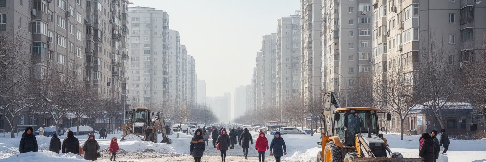
ハルビンの暮らしは、冬の長さと寒さによって細かく形作られます。暖房の開始時期、断熱、窓、配管、除雪、滑り止め、厚い衣服、屋内商業施設、地下通路、バス待ちの時間は、生活の質に直結します。観光客にとって厳寒は非日常の体験ですが、住民にとっては毎日の通勤、通学、買い物、介護、病院通いの条件です。古い集合住宅では断熱やエレベーター、配管の更新が負担になり、高齢者や低所得世帯ほど暖房費や外出の重みを受けやすくなります。冬は屋外の活動を制限する一方、室内の市場、浴場、食堂、家庭の集まりを濃くします。子どもは凍った広場で滑り、高齢者は昼の短い時間に買い物や散歩を済ませます。雪と氷は美しい景観を作りますが、転倒、交通遅延、車両管理、救急対応、清掃員や配達員の負担も増やします。ハルビンの生活を読むには、氷雪祭の輝きだけでなく、朝の除雪、凍る歩道、暖房管の修理、学校へ向かう子どもの足元を見る必要があります。寒冷地の都市力は、寒さを売り物にする力だけでなく、寒さの中で弱い人が安全に暮らせる仕組みに表れます。高齢者が外出を減らせば孤立が深まり、子育て世帯には通園や医療の距離が重くなります。宅配や除雪に頼るほど、屋外で働く人の負担も増えます。暖かい室内と安全な歩道は、北方都市の基本的な福祉です。冬の日常を支える制度こそ、街の底力です。
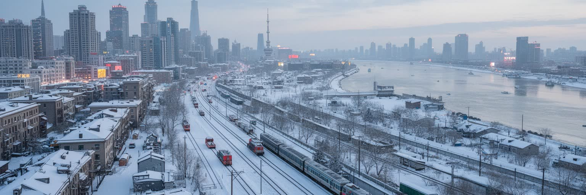
ハルビン観光は、中央大街、聖ソフィア大聖堂、松花江、太陽島、氷雪大世界、鉄道駅、博物館、ロシア風の食文化を組み合わせて成り立ちます。冬は氷雪祭が強い吸引力を持ち、夏は河畔の涼しさと歴史地区の散策が魅力になります。観光地が近いことは便利ですが、人気地区には混雑、価格上昇、交通規制、写真撮影の集中、住民の生活道路への影響も生まれます。歴史建築はよく保存された外観だけでなく、使われ方の変化も見る必要があります。教会が展示施設になり、商館が店舗になり、古い住宅が宿泊施設になる時、記憶は守られるだけでなく再編集されます。観光の質を高めるには、案内、公共トイレ、防寒休憩所、歩道、夜間照明、多言語表示、安全管理が欠かせません。中央大街の買い物、夜のバーやライブ演奏、地元メディアや口コミアプリの混雑情報も、来訪者の動きを変えます。ハルビンを訪れることは、異国風の街並みを楽しむだけではなく、鉄道都市、移民都市、寒冷地都市としての重なりを歩くことです。名所の間にある普通の店や団地も、都市理解には欠かせません。短期旅行では見えにくい公共バス、学校、病院、朝市を意識すると、観光地の背後にある生活都市が見えてきます。冬の歩道や待合所が整うほど、来訪者にも住民にもやさしい街になります。遺産観光は、生活の尊重と一緒に進むべきです。
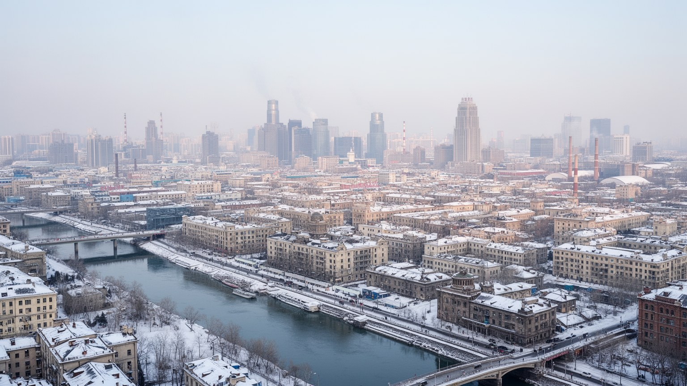
ハルビンの都市更新は、歴史地区の保存、老朽住宅の改修、新区開発、産業転換、人口流出への対応を同時に抱えています。松北新区の広い道路や展示施設は新しい都市像を示しますが、旧市街には老朽化した集合住宅、狭い路地、暖房や配管の更新が必要な地区も残ります。若者が沿海部や南方の大都市へ移る流れは、労働市場、学校、消費、住宅需要に影響します。都市をきれいに更新するだけでは、人が残る理由は生まれません。安定した雇用、賃金、起業機会、医療、教育、大学の研究環境、文化の場、冬でも使いやすい公共空間が必要です。歴史地区の再開発は観光収入を増やしますが、家賃上昇や画一的な商業化で小さな店や古い住民を押し出す危険もあります。露店、修理店、小さな青果店、地下商場が残るかは、生活価格と街の記憶に関わります。ハルビンの未来を読むには、氷雪観光の成功だけでなく、東北老工業基地としての再生、若い世代の選択、寒冷地のインフラ更新を合わせて考える必要があります。都市更新の価値は新しい建物の数ではなく、長い冬を暮らす人が安心して住み続けられるかで測られます。古い地区の改修では、断熱、エレベーター、排水、歩道、地域医療の改善が観光施設以上に重要になります。新区が広がるほど、中心部との交通費や時間も負担になります。更新は見た目の刷新ではなく、人口が減る時代に都市の密度と公共サービスをどう守るかという選択です。